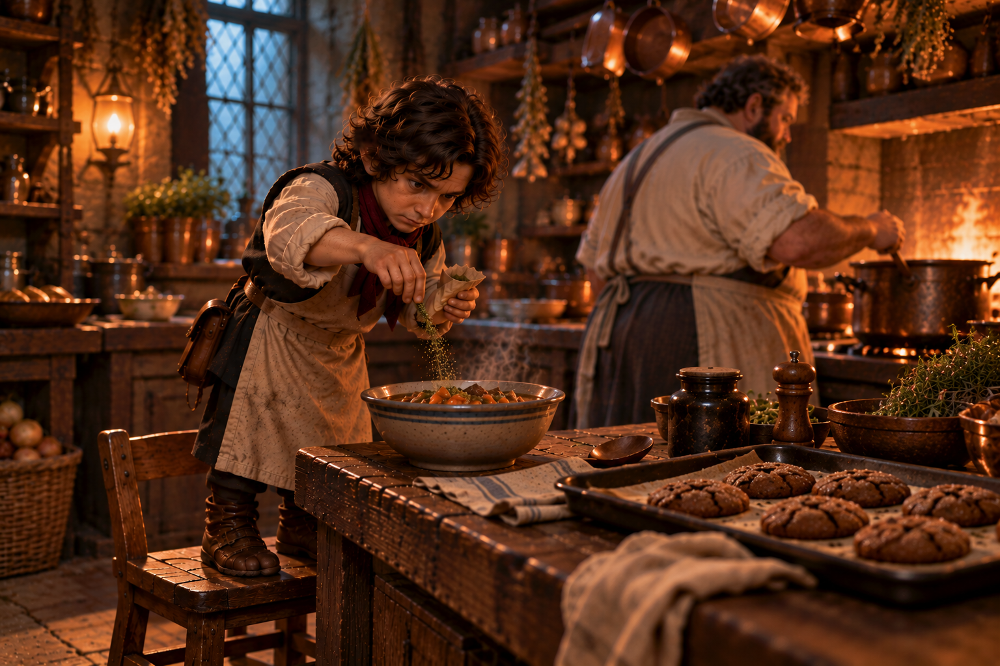

Worst-laid plans
I love it when a plan comes together! But with Ravenlost, it rarely does.

After leaving Lord Godfroy's, the party stopped at a courier for Bia to send two letters and one platinum piece back home. The cost for sending a courier through the Mists with two letters was 4 gold.
Ravenlost then returned to the mayor's residence and agreed to begin their investigation of the sanatorium the following morning.
The mayor was already prepared: she had employee badges ready for Cadric and Elisandra, who would enter as a groundskeeper and janitor. Getting Bia and Jain inside required a little more creativity. Together with the mayor and the captain, the party worked out a plan for each of them to cause a separate public disturbance serious enough to get themselves committed to the sanatorium.
The captain also provided Cadric with one more valuable item: another punch card for Atim’s Arcana worth 25% off a future item!
The party left their weapons and armor behind at the garrison. If they were going to learn what was happening inside the sanatorium, they would have to do it without looking like adventurers. Then they all stayed at the Salty Dog for the night.
They had one goal: Investigate what was happening at the sanatorium.
A plan was in place. And Jain would go first.
What could go wrong?
The ruckus at the docks
The next morning at 6:00 AM, Jain arrived at the docks. She began stumbling around, groaning and clutching her head. When a concerned sailor approached, Jain grabbed his arm and shrieked, "She's coming!" She made herself appear more wolf-like and continued howling.
Eventually, four city guards came and carried her away to the sanatorium, where she saw Peter. "You did this to me!"
Back at the Salty Dog, the others were awake and watching as Jain was carried away.
"See? I told you!" Cadric said to Menda.
Inside the sanatorium, Jain did little to convince anyone that there had been a misunderstanding. She was escorted to an intake room, where she encountered a giant bald orderly who didn't speak. She crawled into a corner.
Belinda, an intake nurse with heavy eyeliner, asked her how she was feeling. Silent, Jain slowly began approaching her like a curious dog.
"What's your name?" the nurse asked.
As Jain got closer, the orderly grabbed his stick tighter. Seeing this, Jain returned to her corner.
"Put her in Wendel's old room," Belinda instructed.
"My name is Wendel!" said Jain.
"Great, I'll talk to you later."
"You have fat ankles!"
The orderly prodded Jain to get up and move. She refused. Two more orderlies arrived and picked her up. Jain howled and bit one of the orderlies. He was unfazed. Jain continued to attack. She dug her nails deep into one orderly just as the elevator was opening.
"This one has spunk," said a woman who emerged from the elevator. "I'm Dr. Caroline Resdonna," she said to Jain, followed by "Muzzle and morphine," to the orderlies.
Jain had made herself exactly the sort of patient who wasn't likely to be released immediately. More unsettlingly, no matter how much she provoked the orderlies, they showed almost no emotional response.
The new employees
Cadric and Elisandra had a considerably easier way in.
With their employee badges from the mayor, Cadric arrived as the sanatorium's new groundskeeper and Elisandra, using the name Sandra Korn, arrived as its new janitor.
Cadric met Peter, the night watchman and his new boss, who showed him where he would be staying and explained his duties. Cadric would spend his mornings maintaining the grounds and his afternoons working around the farm, sometimes alongside the lower-security patients. The job also gave him a convenient reason to move around the sanatorium grounds without attracting too much attention.
Elisandra met Helen, the nighttime janitor, who explained her own responsibilities. Elisandra would clean the first-floor common areas and staff wing, tend to the basement boiler several times a day, and handle messes elsewhere in the building. The second-floor ICU was more restricted: she was only supposed to clean there when specifically summoned.
They also got their first look at the sanatorium's enormous, bald orderlies. Nearly as large as Bia, they rarely spoke and seemed to be wherever patients might cause trouble.
And both new employees learned one particularly interesting rule:
The third floor was off limits. That was Dr. Caroline's quarters.
The undead are coming!
Later that morning, Bia took a different approach than Jain for her entry. She staged her disturbance in the center of town without magic or transformations. "The undead are here!" she insisted, and informed the townsfolk that everyone was in danger. Some citizens attempted to calm and reassure her, but she continued to scream.
It wasn't long before the city guard from the garrison escorted her to the sanatorium.
Inside the sanatorium, Bia was examined by Dr. Caroline. She continued warning the staff about the approaching undead and the need to prepare the town's defenses. Rather than heed her warning, Dr. Caroline placed her in the lower-security wing on the first floor. Bia continued to express frustration that no one believed her.
"You have fat ankles," was her response. Dr. Caroline walked away.
Ankle sizes aside, the plan had worked. All four of them were now inside.
Four covers, one investigation
The sanatorium was a three-story building with a basement. Cadric and Elisandra could explore portions of the first and second floors, but the third floor remained a mystery. As a low-security patient, Bia had access to the common areas on the first and second floors and could also work the grounds.
Cadric quickly discovered that being the new groundskeeper gave him an excellent excuse to wander. The sanatorium was sorely lacking in greenery, and Cadric took it upon himself to fix that. He watered plants, moved them around the building, added new ones for decoration, and used his duties to learn as much as he could about the sanatorium's layout, staff, and routines.
Eventually, his exploration brought him to the closed gate leading to the third floor. But he could go no farther.
Elisandra's janitorial duties gave her a different kind of access. She learned the routines of the building, including the schedule for tending to the basement boiler, which helped power the elevator.
More importantly, the basement contained the morgue. Inside was the recently autopsied body of a woman.
Elisandra examined the corpse and discovered that the skull had been opened. The brain appeared to have been cut into sections. Nearby, she found an anatomical diagram of a brain with part of the left hemisphere marked with two letters:
GE.
Elisandra couldn't determine exactly what had been done to the woman or why.
Cadric also made a new friend in the kitchen: Cookie, the sanatorium's cook. While learning the staff's routines, Cadric began spending time talking with him and offered to help out in the kitchen. Cookie mentioned that he wanted to do some baking but needed butter, something Cadric could easily pick up in town after finishing his work for the day.
Cadric happily volunteered.
The friendship also gave him another useful source of information. Cookie knew the sanatorium's meal routines, including when and where Dr. Caroline ate.
Isolation
Jain remained isolated in her cell after the morphine wore off. She continued to attract attention from the staff, and her increasingly difficult behavior also gave her the opportunity to observe the orderlies.
They were huge, silent, and disturbingly obedient. And now that she was awake, they were coming for her so that Dr. Caroline could question her again. She had thoughts of escaping. When one of the orderlies grabbed her, she teleported into the elevator cage that was coming up to the second floor. She landed right in front of Dr. Caroline, who looked neither threatened nor fazed.
Jain got down on all fours. Dr. Caroline bent down to meet her at eye level. Jain submitted and curled into a ball.
"Pet me, bitch!"
The elevator door opened. Jain ran out and ran straight into two orderlies, one of whom jabbed her with a needle.
"Who did intake on this one?" was what Jain heard before passing out again.
The other patients
From her cell on the first floor, Bia was able to chat with three of the sanatorium's other patients: Randal, Janice, and Robert. Randal had been there for about two years, Janice for three, and Robert for six months. Randal and Janice were Mordent citizens. Robert was originally from Barovia and claimed that he had become lost in the Mists before eventually finding himself here.
They explained that life in the lower-security wing wasn't particularly bad, as long as you didn't cause too much trouble. They had access to a nice common room with books and games, there was arts and crafts time, and if you were lucky enough, you could work on the farm or in the garden. But Bia's behavior had already caught the staff's attention, and the other patients warned her that if they believed she might become a threat to herself or others, she could end up in intensive care.
When Bia asked what was so bad about the ICU, their answer was simple:
"You generally don't come back."
They had a particularly recent example. Wendel had been taken to the ICU a week earlier and still hadn't returned. Janice also explained that the area had once simply been the high-security wing. Dr. Caroline had begun remodeling it after taking over the sanatorium, turning part of it into the intensive care unit.
Trashcan man
While cleaning the restrictive-care area, Elisandra noticed what appeared to be an ordinary trashcan sitting in the corner. As she approached, however, the lid snapped shut.
Curious, Elisandra crumpled up a piece of paper and offered it as tribute. The lid opened and a hand emerged to accept it.
"Trash."
The trashcan then began slowly shuffling across the floor.
When Elisandra asked the nurse what his deal was, she learned that Trashcan had been at the sanatorium longer than the nurse had worked there. Later, Elisandra asked Dr. Dave about him.Dr. Dave explained that the staff had been trying for years to get Trashcan out of the trashcan, but there was a complication.
"He's a different being if he’s outside of the trashcan."
Elisandra pointed out the obvious flaw in the sanatorium's treatment plan: if they wanted him to stop believing he was a trashcan, perhaps letting him continue living inside one wasn't helping.
The writing on the wall ... and floors
Jain woke to a nurse bringing cold stew to her cell. She took the bowl of stew and threw it at the cell bars. The nurse, who had a black eye, just sighed. This wasn't the response Jain was looking for, so she peed on the wall. That's when she noticed she wasn't the first to do so. Not wanting to be outdone by Wendel or others, Jain then pooped on the drain.
The nurse sent Elisandra in to clean it. Elisandra appeared in Jain’s cell a few moments later. After cleaning several areas of the hospital, Elisandra couldn't help but notice that Jain's room was much more disgusting than the others. After cleaning the cell, she asked the nurse why it was in such bad condition, and the nurse blamed Wendel.
Now that her room was free from urine and feces, Jain took a closer look around. Her cell was badly damaged, with chipping paint and loose, shifting floorboards. She also saw writing on some of the walls and part of the floor. As she removed more parts of the wall and floorboards, she found the messages continued there as well.
The writing repeated the same two unsettling phrases:
"She will come visit you."
"No, he won't."
Who "she" and "he" were remained unclear.
Jain howled. Eventually, an elderly doctor carrying a cane came to investigate.
"Oh, hello. Nice to meet you. How can I help you?"
"No, he won't. No, he won't. No, he won't," Jain repeated.
The doctor seemed remarkably unconcerned by the state of her room.
"I don't understand what that means," he said. "What can Dr. Van Larder do for you?"
Jain offered no further explanation and only repeated "No he won't!" Dr. Van Larder eventually hobbled away.
Keeping watch
Dr. Caroline arrived shortly after to check on Bia, and Bia continued her story about the approaching undead army. Dr. Caroline eventually offered to take her upstairs and prove that the town was safe.
On the second floor, she seated Bia beside a large window overlooking Mordenshire. From there, Bia had a clear view of the town and the surrounding area. Dr. Caroline assured her that nothing was coming and told her she could stay there and keep watch as long as she wanted.
Bia happily accepted the assignment and remained there with an orderly.
Before leaving, Dr. Caroline unlocked the door to the ICU and stepped inside. Bia caught a brief glimpse through the open door. Unlike the sterile linoleum and hospital-like appearance of the rest of the sanatorium, this room looked more like a private therapist's office, with oak paneling, a leather chaise and a chair beside it. Another door on the far side led deeper into the ICU.
It wasn't much, but after what the other patients had told her about people going into intensive care and never returning, Bia now knew where the ICU was and had seen at least a little of what was waiting inside.
A short while later, she met Dr. Van Larder. She learned that he had worked at the sanatorium for 43 years, but he didn't work in the ICU.
"Only Dr. Caroline and Dr. Dave go in there."
He also told her that Dr. Dave had arrived with Dr. Caroline 18 months ago, and the two were old friends.
More pieces for this puzzle.
Speaking in Halfling
Being separated made exchanging information difficult, but the party found ways around it.
Cadric and Elisandra managed to meet outside near the garden and compare what they had discovered. Elisandra told him about Trashcan, while Cadric shared what he had learned about Dr. Caroline's routines and the ICU. They also compared notes on the strange orderlies, who seemed to be everywhere but never appeared to eat, sleep, or behave much like normal employees.
If something was happening inside the sanatorium, Cadric suspected that the answers were either in the ICU or somewhere within Dr. Caroline's quarters on the third floor. He was already beginning to form a plan for getting her out of the way long enough to investigate.
While still keeping watch on the second floor, Bia encountered Dr. Dave. She could see Elisandra and Cadric speaking in the garden and formed an idea of how to get outside.
As a low-security patient, she could work on the most important problem facing the sanatorium: defenses. If an undead army really was coming, the town clearly needed better defenses. She discussed this with Dr. Dave, who agreed this was a good plan and introduced her to the groundskeeper.
Now outside, Bia seized her opportunity to check in. She pointed to a flowerbed. "This bed is all wrong," she said to the groundskeeper. Then she began offering advice to Cadric about improving their farming techniques.
At least, that's what anyone listening assumed they were talking about.
But Bia and Cadric were speaking Halfling. She was raised on a farm with Halflings, after all.
With the orderlies and patients none the wiser, Cadric updated Bia on what the others had discovered and what he planned for that night. He just needed to run into town for an errand. He also said that he would pick the lock on her cell after lights out.
Butter, hemlock, and a plan
Cadric's employee status gave him a useful privilege: he could leave the sanatorium grounds after his shift.
He headed into town to get butter for Cookie, the sanatorium's cook. Cookie wanted butter so he could make molasses cookies, and Cadric was happy to oblige. As he was leaving the grounds, he noticed Dr. Caroline walking toward Peter's home. With no excuse to follow her, and with two errands to complete quickly, he headed toward the city center.
In addition to butter, Cadric also stopped at the garrison to retrieve an important item.
Hemlock.
When Cadric returned, his bag containing the butter was checked by the guards. The hemlock flowers weren't discovered.
Now his plan was slowly taking shape.
Dr. Caroline needed to be removed from the equation long enough for the party to investigate the sanatorium's restricted areas. Cadric learned her routines and meal schedule from Cookie and planned to drug her food. He also intended to prepare three drugged cookies that could be used against staff as part of the party's nighttime plan.
Now they just needed enough time to put everything in place.
Jain had other ideas.
Intensive care
Jain decided to reach out to her neighbors to see if she could learn more. She let out several howls.
"Trashcan!" one responded.
"The voices!"
"Play hopscotch on your chest!"
Jain decided to see how far she could get with Trashcan.
"Could we come up with something where you say ‘trash’ for yes, ‘can’ for no?"
"Trash."
It worked.
Jain learned that Trashcan had been at the sanatorium for more than two years and, unsurprisingly, that he collected trash. She tried asking whether he had ever found a way out, but the conversation became less productive. Finally, Jain explained that she wanted to escape and asked whether he could help her.
Trashcan began slowly shuffling toward her cell.
Jain tried picking her own lock, but without tools she couldn't manage it. From nearby came another response.
"Trash."
A hand emerged from the trashcan holding...a lock.
Not a key. Not a lockpick. A lock.
"Oh, you sly dog!"
Then the hand and the lock disappeared back inside.
Jain decided she needed a different plan.
Jain screamed and scratched herself. A nurse came and saw her bleeding.
As she continued screaming, three orderlies came into her cell along with Dr. Dave, who told her she was going to the ICU.
On the second floor, Cadric, who was placing new flower pots around the area, heard what was happening near Jain's cell.
As the orderlies pinned her down, Jain teleported and dashed to Cadric.
"They're taking me to the ICU!"
Cadric immediately went for the elevator, but it was too slow. The warning didn't buy her much time. The orderlies caught up with Jain, and Cadric saw them inject her.
Stew and molasses cookies
Cadric went downstairs and met Bia in the first-floor entryway. Once again, the two switched to Halfling as Cadric explained his plan to drug Dr. Caroline's dinner as well as three of the molasses cookies for the staff.
Cadric then returned to the kitchen, where Cookie was preparing dinner and making good on his promise to bake molasses cookies. Cadric stayed to help.
As the meals went out, a nurse poked her head into the kitchen with one important piece of information: Dr. Caroline would be eating alone that night. Her food could be sent up whenever it was ready.
Perfect.
Cookie prepared her bowl of stew. Cadric made sure it was seasoned with something extra.
Dinner with Dr. Caroline
Jain awoke restrained in the ICU. Dr. Caroline sat nearby, eating her stew.
She questioned Jain. Jain refused to answer. Dr. Caroline continued eating, telling Jain that she was joining "a sort of club" and referring ominously to an upcoming surgery.
Eventually, the hemlock did its work. Dr. Caroline stood up from her chair and then passed out.
Jain wasn't interested in waiting around for the rest of the party's carefully timed nighttime plan. She dislocated her thumb and worked herself free of the restraints.
When Dr. Caroline regained consciousness shortly after, Jain attacked her. Soon, Jain was choking Dr. Caroline. And Dr. Caroline screamed.
So much for the plan
It wasn't lights-out yet. That turned out to be important.
Bia was still permitted to move upstairs, and the scream sent her, Cadric, and Elisandra toward the second floor before the party's plan was anywhere near ready.
The three drugged cookies never happened.
Orderlies converged on Dr. Caroline's location. Then they heard Dr. Caroline's voice ordering them to stop.
Except it wasn't Dr. Caroline. It was Jain. And the orderlies obeyed.
For a moment, the party had found something that could control them.
Cadric didn’t know what was happening in the ICU. Worried that Jain was in trouble and had little time, he took his plan to another level. He drank his Potion of Growth, increasing his size until he was approximately as tall as Dr. Caroline. Then he cast Disguise Self.
Now there were two Dr. Carolines. One was battered and being choked by Jain. The other was Cadric. On the second floor, he commanded the two orderlies to drop their keys. He took a set to unlock the ICU door.
Dr. Dave emerged from a room deep in the ICU just as Cadric unlocked the main door. He looked at Jain. He looked at a Dr. Caroline being choked. He looked at the other Dr. Caroline.
Dr. Dave had no interest in trying to figure out what was going on. Instead he raised his hand. A small orange mote, no larger than a marble, appeared in his palm before streaking toward the doorway.
Fireball.
And everything went to hell.